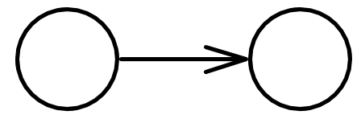
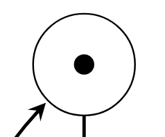
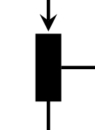
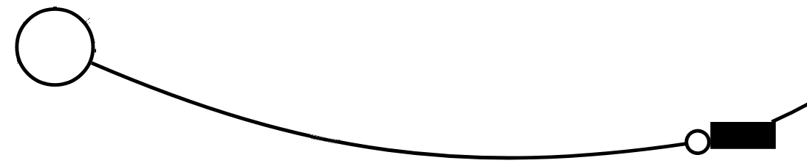
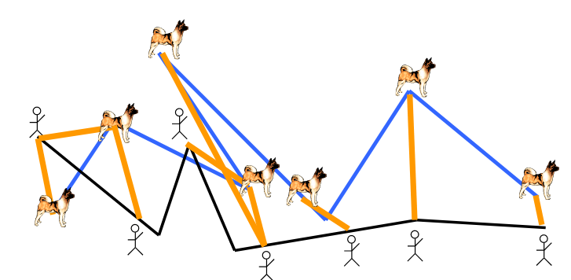

Intro
This is a collection of the notes and assignments I've written during my stay at Aalborg University. I use it for personal purposes during the exam period, or as a point of reference for courses which depend on material already studied. Anyone is welcome to submit a PR against the source code, which is available at https://github.com/lihram/aau.
Structure
This book is composed of 10 semesters, i.e. the undergraduate + graduate studies. Each semester contains 3 courses, and optionally a project. The last two semesters are different, as the project counts for more ECTS than in previous semesters.
Semester 1
Imperative Programming
Programming in C
Linear Algebra
Matrices.
Problem Based Learning
This course is basically useless, but the concept is good.
Semester 2
Computer Architecture
Discrete Mathematics
Object Oriented Programming
Semester 3
Algorithms and Datastructures
Design and Evaluation of User Interfaces
System's Development
Semester 4
Languages and Compilers
Principles of Operating Systems and Concurrency
Syntax and Semantics
Semester 5
Computability and Complexity
Machine Intelligence
Software Engineering
Semester 6
Advanced Algorithms and Datastructures
Database Systems
Theory of Science
Semester 7
Distributed Systems
Research into effective use of distributed computation, with topics such as big data, distributed file systems, decentralized consensus, etc. Essentially, how can we utilize all this raw computing power available to us to solve big problems?
Topic 1: Virtual Infrastructure Management
- What are the tasks of VIM?
- Describe the structure of a typical VIM solution
- What is the life-cycle of a VM and how do you migrate a VM?
- How do you control placement and scheduling of VMs? (not: SLA-driven management)
Material: slides on VIM and VIM migration, CC book chapter 1, 5 and 6, not section 6.4.
Tasks
Virtual Infrastructure Management has the same overall goals as a single-computer operating system, but tries to satisfy them for distributed stacks.
- Provide Uniform View to Virtualized Resources
- Provide VM Management
- Provide Resource Allocation, Scheduling, Balancing
- Provide Monitoring, Fault-Tolerance, Maintenance Support
- Provide Interfaces/APIs
Structure of VIM Solution
Typically a master-slave architecture, where a node can be physical or virtual. Manages users, storage, networks, interfaces, etc.
Life-cycle of a VM and migrating a VM
Manual Lifecycle
For the manual lifecycle, someone would have to go through these step for each request received for provisioning.
stateDiagram
Request --> Provision
Provision --> Operation
Operation --> Release
Release --> Request
Automatic Lifecycle
The automatic lifecycle allows self-service style businesses to supply virtual machines on demand, which leads to a slightly more complex lifecycle, but much faster service.
stateDiagram
Pending --> Prolog
Prolog --> Boot
Boot --> Running
Running --> Shutdown
Shutdown --> Epilog
Epilog --> Done
Pending --> Hold
Hold --> Pending
Running --> Migrate
Running --> Suspended
Running --> Stopped
Migrate --> Running
Suspended --> Running
Stopped --> Running
Migrating a VM
There are three main methods for VM migration:
- Live Migration: The migration of a running VM. This ensures high availability and a disruption for only a few milliseconds.
- Regular or Cold Migration: The migration of a powered-off VM.
- Live Storage Migration of VM: Moving the configuration file or virtual disks of a VM without disrupting its services.
Live Migration is the most interesting of these, as it isn't trivial to implement, but has the most positive outcome, i.e. no visible down-time for the users.
Controlling Placement and Scheduling
A VI manager typically has configuration options for this. OpenNebula, for example, assumes that there is a base image repository which holds the images to use, and allows different ways to access it, such as HTTP, FTP, or even the NFS.
Scheduling is different depending on the assumptions of the provider. Big providers such as Amazon can use the immediate provisioning model, since they can assume they have infinite resources. Private clouds can configure scheduling via e.g. Haizea, which uses a lease-based resource provisioning model. Alternatives are best-effort, or pre-reservations.
TL;DR: The scheduler is typically separate from the VI manager, and can be configured to use some specified model for scheduling images. (Haizea allows this configuration to be written in Python!)
Topic 2: Google Infrastructure and GFS
-
What are the design principles behind the Google Infrastructure?
-
Go into depth with GFS
-
What kind of infrastructure does GFS target? What are the key assumptions and design goals behind it?
-
Explain the architecture, consistency model, replication, fault tolerance
-
What are its advantages and disadvantages?
Material: slides on Google infrastructure, GFS paper, “Web-search for a planet” paper
Design Principles
Energy efficiency and price-performance ratio. (Web-search for a planet, page 1)
GFS
GFS targets an infrastructure composed of many commodity hardware components.
GFS was created with the following assumptions:
- Failures are the norm
- Files are typically very large (multi-gigabyte)
- Large streaming reads (sequential) and small random reads (often buffered, also sequential)
- Write operations are typically append, they are typically large and sequential
- Support concurrent appending to a file with well-defined semantics
- High sustained bandwidth is more important than latency
Architecture
The high-level architecture is composed of three actors: One master, many chunkservers, many clients. All run Linux.
The master acts as a DNS server for clients, i.e. it takes a request and returns an address to a chunkserver. Chunks are 64MB each, and have unique 64-bit identifiers: chunk handles.
Consistenty Model
The paper describes the model as a "relaxed consistency model". Garbage is collected lazily. It guarantees:
- Atomic file namespace mutations, such as file creation.
- A file region is:
- Consistent if all clients see the same data from all replicas.
- Defined if consistent and clients see their writes in their entirety.
- Records are appended atomically at least once somewhere
- Applications can handle inconsistent regions
Replication
Replicas are spread across different racks. This makes them very resistant to faults, but increases the time it takes to write. The user defines a replication goal, which is typically 3.
Replicas are created for three reasons:
- Creation: Initially, the replicas are empty
- Re-replication: When replicas are lost, or replication goal redefined.
- Rebalancing: Periodical rebalancing
Considerations: Resource utilization, recent creates, and separate racks.
Fault Tolerance
- Constant monitoring
- Replicating crucial data
- Fast and automatic recovery
Conclusion
Only appropriate for very specific stacks. Does not support small files very well. High latency, especially with writes.
Topic 3: MapReduce
- Explain the MapReduce paradigm and programming model
- Explain the system architecture
- Explain a concrete example application and how it is executed
- Explain how to optimize the performance and how worker failures can be handled
Material: CC book chapter 14, MapReduce slides, and MapReduce paper
MapReduce Paradigm & Programming Model
MapReduce is a computation model whose goal is to make it possible to parallelize computation simply, using two computation primitives: Map and Reduce. The actual logic for making these primitives run in parallel on distributed systems should then be abstracted away by the library.
The computation takes a set of input key/value pairs and produces a set out output key/value pairs.
Map
Map is the first function which the user must define. Its responsibility is to produce an intermediate set of key/value pairs.
Between Map and Reduce
The MapReduce library aggregates all values for a given key before passing it on to the Reducer.
Reduce
Reduce is the second function which the user must define. It receives a key and the set of its values, and produces the output key/value pairs.
System Architecture
There is one master node, many workers, M Map tasks and R Reduce tasks. They share access to a global file system, such as GFS or HDFS, etc. The input data is split into M segments, and workers are assigned Map or Reduce tasks by the master. The Map worker stores the intermediate data locally, and the master assigns a Reduce worker to read it and compute the final result. The result is stored in the global file system.
Example Application & Execution
WordCount is a classic example, where we want to count the occurrence of words in large or many documents.
The Map function receives a list of words, and emits <word>/1 for each word.
The Reduce function receives the word, and a list of 1's, emitting <word>/<list.length()> for each word, where list.length() is the length of the list of 1's.
Execution
- Split the data into M pieces. Fork the program.
- The master assigns M map tasks and R reduce tasks to available workers.
- Each Map worker performs the Map function, storing the result in memory.
- Periodically, these values are written to disk, and their location is reported to the master node.
- A reduce worker is notified by the master about the locations, and uses RPC to read the data. It then sorts the data.
- For each unique key, the reduce function passes they key and its values to the user's reduce function. The result is emitted to the final output.
- Once all tasks are completed, the master returns.
Optimizing Performance
- Specifying a custom partitioning function for mapping intermediate key values to the reduce shards.
- Custom combiner functions after mapping tasks to reduce the intermediate data sent from a mapping worker to a reducer.
- Enabling backup tasks to reduce slowdown by stragglers.
Handling Worker Failures
The master marks a worker as failed if it does not respond to pings within a certain amount of time. All in-progress tasks are reset to idle, and become available for scheduling on other workers. All mapping tasks completed by the failed worker are marked as idle as well, since their result is stored on the worker and not the global file system.
Topic 4: Distributed Mutual Exclusion
- What is DME and what are the requirements to a DME algorithm?
- What are the criteria to evaluate DME algorithms?
- Explain the centralized, token ring, and Ricart and Agrawala’s algorithms, and compare them. What are their advantages/disadvantages?
Material: DS book: 5ed Sections 15.1 and 15.2, slides on distributed mutual exclusion (lecture 7)
DME & Requirements
DME is where distributed process wish to exclusively access a shared resource.
Requirements
- Safety: one at a time
- Liveness: requests always succeed
- Ordering: requests are handled in the same order they are received
Criteria for Evaluation
- Fault tolerance
- Performance
- Bandwidth: Number of messages required for entry and exit.
- Client delay: The delay caused by each entry and exit.
- Throughput: Synchronization delay, delay between one process exiting and the next entering.
Central Server Algorithm
Simplest method. A central server queues requests and grants an access token to the oldest request.
It delays other requests, and delivers tokens if
- there are no requests in queue when a request is received, or
- when it receives a release token from the process with current access.
Token Ring Algorithm
Simplest method without an additional process. Arrange N processes into a logical ring. Each process has a communication channel to the next process in the ring. Exclusion is obtained from the previous process, and sent to the next process once done.
Multicast and Logical Clock Algorithm
Processes that require entry multicast a request message, and can enter it only when all the other processes have replied to the message. Each process has a unique identifier and a Lamport clock, which satisfies LC1 and LC2 from DS 14.4. (Note, a Lamport clock is a logical clock, which increments the timestamp every time a message is sent. It sends the timestamp along with the event. When it receives events, it sets the logical clock to be the max of it's internal clock vs the one received.) When a process is in the RELEASED state, it responds immediately to other processes requesting access. When a process is in the HELD state, it does not respond until it is done. When two or more processes request access at the same time, they are sorted first by the message timestamp, and then by their identifier. A process defers responding to other processes once it has sent its request and recorded the timestamp.
Property Comparison
| Algorithm | Central Server | Token Ring | R&A |
|---|---|---|---|
| ME1: Safety | Yes | Yes | Yes |
| ME2: Liveness | Yes | Yes | Yes |
| ME3: Ordering | No | No, ordering is based on ring topology | Yes |
| Bandwidth | Enter: 2 Exit: 1 | Enter: 0..N Exit: 1 | Enter: 2(N-1) without multicast Exit: 0 |
| Client delay | Enter: Length of queue Exit: None. | 0..N | Entry: Round-trip |
| Synch Delay | Round-trip | 1..N | 1, but with N points of failure |
Topic 5: Multicast
- Why do you need multicast?
- Explain basic multicast assuming reliable 1:1 communication
- What are the requirements to reliable multicast and how do you implement it over basic multicast and IP-multicast?
- Explain the difference between FIFO, Total and Causal ordering? When is it important?
- Briefly explain the two ideas to implement TO-multicast. What can you say about reliability?
Material: 5ed section 15.4. (lecture 8)
Why Multicast?
Multicast serves the purpose of delivering a message from a single process to all processes belonging to a given group.
Basic Multicast
Two primitives and a guarantee: A correct process will eventually deliver the message, as long as the multicaster does not crash.
B-multicast(g, m): for each processping,send(p, m)- On
receive(m)atp:B-deliver(m)atp.
Problems:
- If run concurrently with a large number of receiving processes, liable to suffer from
ack-implosion, or acknowledgement-implosion, where too many processes respond at the same time, causing the process to drop responses and waste more bandwidth trying to re-send the message. - If the multicaster crashes, then some members of group
greceive the message while other's don't.
Reliable Multicast
Reliable multicast has the following properties:
- Integrity: A correct process
pdelivers a messagemat most once. - Validity: If a correct process multicasts
m, then it will eventually deliverm. - Agreement: If a correct process delivers message
m, then all other correct processes ingroup(m)eventually deliverm.
Over Basic Multicast
The sender begins by B-multicasting to each member of group g, including itself.
On delivering m, each member which did not send the original message calls B-multicast again, multicasting to all members of the group, and then R-delivers the message.
This guarantees that even if the original sender fails, as long as one correct process receives the message, it is forwarded again by each recipient.
It should be assumed that duplicates are handled, since this means correct processes will receive the same message more than once.
Not very practical, since each process receives each message |g| times.
Guaranteed to work on even asynchronous systems.
Over IP Multicast
Each process maintains an array of sequence numbers.
- For each group a process belongs to, it maintains a sequence number of sent messages
- For each sender in each group it belongs to, it maintains a sequence number of received messages.
For each message sent to the group, the sender adds the value S for the group and a list of acknowledgements, so that each member can verify that their S corresponds with the R provided in the message by the sender. This way, the recipients can see which messages they have not received, and request them from the sender, or from the node which sent them the acknowledgements.
This implementation is not practical, since we cannot assume that the messages continue indefinitely (which is how we could guarantee agreement), or that copies of all messages are retained, so they can be re-sent.
FIFO, Total and Causal Ordering
FIFO Ordering: if a correct process issues multicast(g, m) and then multicast(g, m'), then every correct process that delivers m' will deliver m first.
Causal Ordering: If multicast(g, m) → multicast(g, m'), where → is the happened-before relation incuded only by messages sent between the members of g, then any correct process that delivers m' will deliver m first.
Total Ordering: If a correct process delivers message m before it delivers m', then any other correct process that delivers m' will deliver m first.
Importance
First of all, ordering does not imply reliability.
A totally ordered multicast simply states that all processes deliver the messages in the same order.
FIFO does not guarantee that the actual order in which different processes issued multicast(g, m) will be respected, etc.
Ordering is especially important in applications such as decentralized messaging, where the order in which things are said is relevant. An alternative example is safety-critical systems, or banking, where certain operations only make sense in the context of previous operations.
Consider for example the difference between 1.0 * 10 + 10 vs 1.0 + 10 * 10.
Totally Ordered Multicast
Assign totally ordered identifiers to multicast messages, so each process makes the same ordering decision based on these identifiers.
Use the sequencers from the FIFO-multicast, but make them specific to the group, and not the process. This only works with non-overlapping groups.
The first implementation depends on a sequencer process to assign the sequence. The sequencer assigns a sequence number to each message it receives (handling duplicates), and multicasts an order message to the group once it has B-delivered the message.
The second implementation requires the processes to collectively agree on a sequence number. Each process maintains two sequences, and on receiving a message, they respond with a proposal, which is 1 + the larger number of
- The largest observed proposal in the group, or
- Their own largest proposal. The largest number wins, and is assigned to the message id, and multicast. Once messages have been assigned a number, they are moved from the hold-back queue into the delivery queue.
These protocols are reliable if the implementations use R-multicast instead of B-multicast.
Topic 6: Replication and Consistency
- Why do you need replication?
- Explain the challenges resulting from replication
- What consistency models exist?
- Explain the consistency model and compare them
- Present an execution which is sequentially consistent but not linearizable
Material: slides on the above topics, and DS book: Chapter on Replication.
- DS 5ed Sections 18.1-18.3 (replication)
- DS 5ed Section 18.4.1 (the gossip architecture)
- DS 5ed Section 17.1-17.3 (Distributed Transactions)
The Need for Replication
Replication allows services to provide high availability and fault tolerance despite different types of failures, lag, etc.
Replication Challenges
CAP Theorem:
-
Consistency
-
Availabilty
-
Partition Tolerance
-
It is impossible for a distributed computer system to simultaneously provide Consistency, Availability and Partition Tolerance.
- ** A distributed system can satisfy any two at the same time, but not all three.
-
** Means a choice must be made if and when there is a partition
- Either become less available, or allow the data seen by multiple clients to be inconsistent
- This depends on the exact application
- Web stores are likely to prefer Availability, while Safety critical systems prefer Consistency.
Existing Consistency Models
A consistency model specifies the guarantees of DSM system.
- Strong Consistency:
- After an update of Process A completes, any subsequent access (by any process) will return the updated value
- Weak consistency:
- System does not guarantee that subsequent access will return the latest value.
Comparison of Consistency Models
The two main correctness criteria for replicated objects are Linearizability and Sequential Consistency. Linearizability is the stronger of the two correctness criteria, but is also unrealistic wrt performance considerations.
Linearizability must satisfy two conditions:
- The sequence of operations meets the specification of a correct copy of the object, i.e. the operations need to make logical sense.
- The order of operations needs to be the same as the real time order of operations.
Sequential consistency shares the first condition, but ignores the real time property of the second condition, requiring instead that the sequence of operations must happen in the same order as it happens on the clients.
Sequentially Consistent, but not Linearizable
The example given in the slides of a service that is sequentially consistent but not Linearizable:
| Client1 | Client 2 |
|---|---|
| SetBalanced(x,1) | |
| GetBalance(y) = 0 | |
| GetBalance(x) = 0 | |
| SetBalanced(y,2) |
For this execution, the real time property of Linearlizability does not hold, i.e. this is not correct wrt a banking system. However, will the less strict Sequentially Consistent model, one could shuffle the second event to occur in front of the first, and in this case have a consistent model.
Active vs. Passive Replication
Passive replication uses a master-slave architecture and is linearizable under certain conditions. Active replication uses multicast, and performs better, but is not linearizable, only sequentially consistent.
The Gossip Architecture
Focuses on high availability, where Replication Managers share gossip messages with each other. Each RM is guaranteed to become consistent over time.
Topic 7: Consensus
-
Explain the consensus problem
-
Solution in synchronous system
-
Explain the Byzantine generals problem.
-
Present impossibility result for 3 Byzantine generals, 1 faulty (argue carefully!)
-
Present the solution for 4 Byzantine generals, 1 faulty.
-
Present clearly your assumptions on system model, failures, and message signing.
-
Discuss impossibility in asynchronous systems and practical workarounds.
-
DS 5ed 15.5
The Consensus Problem
The Consensus problem is a type of Agreement problem, which generally is for processes to agree on a value after one or more of the processes has proposed what that value should be.
More concretely, all processes begin in the undecided state. Each process proposes a value, and proposes a value. The processes communicate, and then each process enters the decided state.
Consensus algorithms require the following:
- Termination, eventually each correct process P_i sets its decision variable D_i
- Agreement, the decision variable value of all correct processes are the same: if P_i and P_j are correct and have entered their decided state, then D_i = D_j (for all i,j ∈ 1..N)
- Integrity, if the correct processes all proposed the same value, then any correct process in the decided state has chosen that value. (Could be a weaker definition for certain applications.)
Consensus in a Synchronous System
Very simple, if no failures:
-
Each process multicasts its value to all processes
-
Waits until a values are received from all processes.
-
Makes a decision.
-
f-resilient consensus algorithm
- ** Solves consensus for f failed proceses
-
** Example: f+1 rounds
- Round 1:
- Each process multicasts its value
- Wait for values from other processes
- Round 2:
- Each process multicasts the values received from other processes in round 1
- Wait for values
- ...
- Round f+1:
- Select the minimum value received as the decision value.
- Round 1:
-
Requires atleast f+1 rounds, f being the number of failed processes.
-
When a round is reached with no failure, every process would decide on the same value.
The Byzantine Generals Problem
Three or more generals are to agree on whether they should attack or retreat. One is a commander, and he issues the order. The others are lieutenants, and must decide whether they attack or retreat. A process may be treacherous, in which case it issues different signals to different peers.
This differs from consensus, since there is a single process whose value the others must agree on.
Also requires
-
Termination: Eventually each correct process sets its decision variable.
-
Agreement: The decision value of all correct processes is the same.
-
Integrity: If the commander is correct, then all correct processes decide on the value that the commander proposed.
-
** Is based around the turkish invasion into Byzantium.
-
** generals must agree to attack or retreat, while only being able to communicate by messengers.
-
** Messages are safe, they cannot be intercepted or tampered with.
-
** Traitor generals can exist
- Traitors can omit answering messages from generals
- Send arbitrary messages
- Byzantine failures = arbitrary faults including:
- Omission failures, crash failures, send different values to different processes
- Being intentionally malicious, buggy
- Byzantine failures = arbitrary faults including:
-
** Attacking with only one army means defeat.
Cost of Byzantine Generals
- ** Requires f+1 rounds, in the general case, f>=1
- ** Sends O(N^f+n) messages.
- ** If using digital signatures, a solution exist with only O(N^2) messages, still f+1 rounds)
- If a process says another process said something else, it can be detected.
- ** If using digital signatures, a solution exist with only O(N^2) messages, still f+1 rounds)
- ** As cost is high, only use if threat is great.
- ** If the source of failures is known, use specialized solutions instead.
Impossibility result for the 3 byzantine generals problem, 1 faulty
-
** There are not f-resilient algorithm if the number of processes are N<=3
-
- ** Shows that no consensus algorithm for N<=3f exists.
-
** If the commanding process is correct, but one of the receives are faulty, the other receiver would receive conflicting information
- P1 says V, P2 says P1 said W, P3 received conflict.
-
If the commanding process, the one broadcasting the order is the traitor
- P2 and P3 received different information
-
** A consensus algorithm cannot distinguish between the above scenarios, meaning that both Integrity and Agreement cannot be achieved
Solution for 4 Byzantine generals problem, 1 faulty.
- ** For 4 processes the result is different:
- ** If the issuer, P1 is correct, but P4 is false.:
- The P2 and P3 will both say that P1 said the same thing, meaning they can reach consensus
- ** If the issuer, P1 is a traitor/ faulty:
- P2, P3, P4 will receive different values, and will be able to decide on a default value instead
Assumptions about the system model, failures, and message signing.
Collection of processes communicating via message passing. Consensus should be reached despite faults. We consider both Byzantine failures and crash failures. If processes sign their messages, then a faulty process is limited in the harm it can do. I.e. where signing is used, a process cannot make a false claim about the message a correct process sent to it.
Impossibility in Asynchronous Systems
Since we cannot distinguish a failed system from a slow one, we can't make the same assumptions as we can in a synchronous system.
- No algorithm can exist that is guaranteed to reach consensus in asynchronous systems.
- Even if we allow 1 crash without byzantine failures or communication failures
- Failed processes cannot be distinguished from slow processes.
- There is always a program continuation that avoids consensus
- Consensus can be reached, but not guaranteed.
- Even if we allow 1 crash without byzantine failures or communication failures
Practical Workarounds
-
Fault Masking: By using persistent storage and restarting failed programs, all failures are fixed and simply treated like slow programs. This way, we circumvent the impossibility result.
-
Failure Detectors: Processes deem a suspect process as failed and ignore its future messages.
-
Randomization: Introduce randomization, so processes become slightly unpredictable. This reduces the power of adversaries to predictably manipulate the system.
-
Nearly synchronous systems:
- Uses Paxos Algorithm '98, completely-safe and largely-live consensus protocol for asynchronous systems.
- Used "part-time parliament" analogy but took 9 years before it was published, updated in "Paxos made simple" paper.
- "Asynchronous consensus algorithms like Paxos maintain safety despite asynchrony, but are guaranteed to make progress only when the system becomes synchronous - meaning that messages are delivered in a bounded length of time.“
Paxos
- Paxos is named after the Parliament on the fictitious Greek island of Paxos.
- Paxos is a family of algorithms (by Leslie Lamport) for distributed consensus in an asynchronous system
- In Paxos termination / liveness is not guaranteed, but happens in “reasonable environments”
- Different roles exist:
- Proposer: Offers proposals, with multiple proposers at once, they instead compete to reach approval first.
- Acceptors: Accepts or rejects proposals
- Learners: Simply learns the agreed upon proposals
- Proposals must have majority to be accepted.
- Paxos Consensus works by sending a prepare request to some acceptors (other participants of the blockchain)
- The acceptors accept the proposal
- The proposer sends a commit request
- The acceptors accept the commit.
- Paxos only requires a majority to accept, meaning half the participants of the blockchain can never answer, and Paxos will still work.
Topic 8: Blockchain
- Explain the characteristics of the blocks in a blockchain (e.g.: immutability, linear growth)
- Explain how the crypto tools used in blockchain work (hash function, signature, merkle tree, hash pointer) and how they are used in the blockchain
- Explain why Paxos consensus is not enough for a blockchain, e.g.: to protect against the double spending conundrum
- Bitcoin: explain the structure of the transaction and how they are verified by the miner
- Smart contracts: discuss the gas prices for different primitives, e.g.: for Solidity
Material: blockchain slides, Bitcoin paper, Solidity tutorial (lecture 13)
The Blockchain
The Blockchain is a digitized, decentralized public ledger of cryptocurrency transactions.
Block Characteristics
A block
- ** Blocks are the individual "links" of the chain of transactions.
- ** A block designates a single transaction
- ** A block is typically composed of the following elements:
- ** Data
- ** A hash pointer
- ** A timestamp
- ** Blocks are added to the chain, the chronological lists of transactions.
- ** This allows participants to keep track of the transactions, without a central recorded database.
How Crypto tools used in blockchain:
Crypto tools ensure the integrity of the blockchain
How they Work
Hash functions
- A hash functionHtakes binary input of arbitrary length, and creates fixed-length output of it.
- ** H:X={0,1}∗→{0,1}L
- typically where L ∈ {128,160,256,512}
- **For security purposes, it is important that a small change in the input results in a large change in the output.
Collisions exist, but they are hard to find with this property.
Merkle Trees
- **Merkle trees, or Hash trees, which are a data structure for summarizing information about a collection of data, with the intent of checking the content.
- ** Is a combination of hash functions with the binary tree structure.
- ** Uses a Hash function H (SHA1, MD5)
- ** Leaves are H applied to the initial symbols.
- ** Internal nodes are H applied to children of a node.
How they are used
Asymmetric Cryptography allows users of the blockchain to both sign and verify blocks.
- ** Keygen, an algorithm which returns two keys;
- a public key, used to identify the user
- A private key, which is used to apply a signature to a transaction, to express consent
- ** Sign, An algorithm which computes the signature of som input, based on the secret key, and some data (typically a hash)
- ** Verify, Decrypts the signature using the public key, and compare the result with a hash of the received data.
Paxos consensus
- **A blockchain network is completely asynchronous and decentralized.
- **For currency, this requires the solving of the problem of double-spending, i.e. being able to spend the same money more than once.
- Paxos is named after the Parliament on the fictitious Greek island of Paxos.
- Paxos is a family of algorithms (by Leslie Lamport) for distributed consensus in an asynchronous system
- ** In Paxos termination / liveness is not guaranteed, but happens in “reasonable environments”
-
- ** Different roles exist:
- Proposer: Offers proposals, with multiple proposers at once, they instead compete to reach approval first.
- Acceptors: Accepts or rejects proposals
- Learners: Simply learns the agreed upon proposals
- Proposals must have majority to be accepted.
- ** Paxos Consensus works by sending a prepare request to some acceptors (other participants of the blockchain)
- ** The acceptors accept the proposal
- ** The proposer sends a commit request
- ** The acceptors accept the commit.
- ** Paxos only requires a majority to accept, meaning half the participants of the blockchain can never answer, and Paxos will still work.
Bitcoin: The structure of the transaction and how they are verified by the miner
Transactions
- ** A transaction contains the following data:
- **A list of input transactions
- **A list of tuples of the recipient public key, and the amount to send.
- **Personal signature, signed with private key
- In order to verify a transaction, one must:
- Verify the signature using the public key of the sender
- Verify the signatures of each of the input transactions
- Ensure that the money has not been spent between the input transactions and the new transaction.
- As transactions are signed using the private key, only the owner of the identity can transfer the money from that point.
- A single user can have any number of identities.
Miners
A miner does the following:
- Verify all the transactions by looking that input transactions are covered and properly signed
- Compute the Merkle root hash for the transactions
- Solve the puzzle on the previous block, for immutability
- Broadcast the new header
- Go on collecting new transactions for next blockMiners receive compensation for computing the next block.
Smart Contracts: gas prices for different primities, Solidity
- Smart contracts are computer protocols that facilitate, verify or enforce the negotiation or performance of a contract, or that make a contractual clause unneccessary.
- The rules are penalties are defined around an agreement, same as with traditional contracts, but automatically enforces those contracts.
- Smart contracts are code that are added to the blockchain.
Ethereum
- Ethereum is a smart contract based blockchain. Contracts live in the distributed network, and has its own balance of Ether, the currency/ fuel, memory and code.
- Every time a transaction is sent to a contract, the code for the contract is executed
- The contract can perform transactions, store data and interact with other contracts.
- To run contracts, a transaction with Ether is made to the contract, optionally with additional input.
- The contract runs until it completes or runs out of Ether.
- Ether is awarded to the winning miner.
- Each miner runs the smart contract, and produces the same output.
Solidity
- An object oriented language for implementing smart contracts.
- Used in Ethereum.
Hadoop-Rs: Programming Assignment
Goals
There are five tasks in all. I have modified the original tasks from the programming assignment to fit my datasets.
Task 1
Study centrality metrics: degree centrality, PageRank centrality, k-core centrality.
Task 2
Compute the most highly cited paper using degree centrality with focus on in-degrees, i.e. most influential paper.
Task 3
Compute the most influential nodes using the PageRank algorithm.
Task 4
Compute the most influential nodes using the k-core centrality metric.
Task 5
Repeat tasks 2-4 with Apache Giraph.
Overview
The project uses the Rust programming language to create mappers and reducers for Hadoop.
The Streaming tool provided by the Hadoop project is used to call the mappers and reducers (see more in tools/hadoop.sh).
This project uses a small dataset (5.6MB of edges) and a standalone installation of Hadoop.
Two datasets are used, the larger one from http://snap.stanford.edu/data/cit-Patents.html and the smaller one from http://snap.stanford.edu/data/cit-HepPh.html.
Both are citation networks.
Accomplishments
I completed the first three tasks, i.e. studied centrality, and calculated InDegrees and PageRank for the datasets.
Interesting Aspects
-
** Uses the streaming Jar instead.
- ** Simply a wrapper allowing Hadoop to call executables directly.
- ** Meaning we can use any language we want to write our mappers and reducers.
-
Hadoop Installing Hadoop is very different depending on the PC. I tried installing it a number of times (back in october, but that install died), and again in january, where I did it with group mates. My installation is not running just yet.
-
Debugging - Debugging distributed applications is difficult. Finding out how the MapReduce framework works like Unix pipes helped isolate where things were going wrong.
-
Data Formatting - In order to calculate the PageRank for the dataset, I needed to change its format. I was able to do this using a simple IdentityMapper + AppendReducer to quickly reformat the dataset into an adjacency matrix from an adjacency list.
-
Sorting and Shuffling - The PageRank algorithm requires repetition until convergence, i.e. that certain steps be repeated until the output is stable. As far as I'm aware, it only does this for transfers from Mappers to Reducers, which means I can't just feed the output of one reducer into another.
-
Small data-set - means that hadoop would only start a single node anyways.
-
** The data we used is instead just a list of nodes, with a list of nodes that are related to that key-node so: 1 2 3 4 2 1 2 Is
Antallet af delta skulle gerne være lig med det totale antal nodes.
Key Items
The relevant files are listed in src/mappers and src/reducers.
Alt i bin
Filer i bin er filer der er brugt til at interface med Hadoop
Results
Use the provided tools and view the results in the output directory.
Makefile:
Simply describes how the project should be run should run.
Is called by doing: "make
Pagerank
Preprocessing is done by combining keys of the same value, and simply adding the related values to that "master" key Should be run a number of times. To run pagerank
- Ensure file is in data folder and that file is updated in makefile
- Open terminal in project
- run "make pagerank-preprocess", wait for it to finish
- run "make pagerank-first"
- run "make pagerank-intermediate", can be run a number of times, to close approximate the exact pagerank
- run "make pagerank-sum", to sum up the deltas.
Preprocessing is only be used to page-rank
Is only used to join keys of the same value, so that key
Combiner
Simply combines all the deltas, reducing the complete
Degree centrality:
Simple counts the number of nodes that point to a specific node. Is actually only wordcount, there is nothing to find the max :(
Hadoop.sh
Used to check for all the relevant requirements, hvis hadoop er installeret til usr/local behøves path ikke blive sat (følg digital ocean guiden.) https://www.digitalocean.com/community/tutorials/how-to-install-hadoop-in-stand-alone-mode-on-ubuntu-16-04
Reducer modtager en liste af key, med en liste af values til hver key.
Cryptographical Tools
A summary of the tools necessary for Blockchains.
Hash
A hash function $H$ takes binary input of arbitrary length, and creates fixed-length output of it.
$H: X = {0,1}^* \rightarrow {0,1}^L$
typically where $L \in {128, 160, 256, 512}$
For security purposes, it is important that a small change in the input results in a large change in the output. Collisions exist, but they are hard to find with this property.
Signatures using Asymmetric Cryptography
Digital signatures are typically done using three algorithms, and a known hash $H$.
KeyGen
An algorithm which returns two keys: a private signing key, and a public verification key.
Sign
An algorithm which computes the signature of some input, given the private key. This input is typically a hash of some data to be sent.
Verify
Decrypts the signature using the public key and compare the result with the hash of the received data.
Merkle Trees
A complete binary tree of hashes. It is built starting from an initial set of symbols. Also known as a hash tree. Explots a hash function H (SHA1, MD5). Leaves are H applied to the initial symbols. Internal nodes are H applied to the sons of a node.
Blockchain Basics
A blockchain is a digitized, decentralized, public ledger of all cryptocurrency transactions. Constantly growing as 'mined' blocks (the most recent transactions) are recorded and added to it in chronological order, it allows market participants to keep track of digital currency transactions without central recordkeeping 1. The Blockchain in essence is a collection of Blocks. Each Block is composed of the following elements: data, a hash pointer, and a timestamp.
Hash Pointers
Pointer to where some info is stored. Cryptographic hash of the info. If we have a hash pointer, we can: (1) ask to get the info back, and (2) verify that it hasn't changed. Similar to how programs to download are often accompanied by a hash, to verify that you downloaded the correct file.
Consensus
The Blockchain network is in principle completely asynchronous and decentralized. In terms of currency, the problem to solve is double-spending, i.e. being able to spend the same money more than once.
Nakamoto Consensus
Assuming that 1. most nodes are honest, and 2. adding a block is computationally expensive, we can ignore received blockchains which are shorter than ours, for two reasons: 1. it was created later than mine, and 2. it can be out of sync. This assumes that the honest nodes have more CPU power than attacker nodes.
Proof of Work
Provide a computational puzzle that is hard to solve when you want to add a valid block, but easy to solve when you want to verify that a block is valid. Specifically, the new block must be a combination of a nonce and a header. The nonce is accepted when $H(\mathtt{header})$ starts with $n$ zeros. $n$ defines how hard it is to add a new block.
Example
Say the hashing algorithm is SHA256, and $n = 36$. Each nonce has the
probability $2^{-36}$ of success. The nonce must therefore be
brute-forced, but only requires one hash to verify.
Blockchain Details
Transactions
A transaction contains the following data:
-
A list of input transactions
-
A list of tuples of the recipient public key, and the amount to send.
-
Personal signature, signed with private key
In order to verify a transaction, one must:
-
Verify the signature using the public key of the sender
-
Verify the signatures of each of the input transactions
-
Ensure that the money has not been spent between the input transactions and the new transaction.
Since the transaction is signed using the private key, only the owner of the identity can transfer the money from that point. A single user can have an arbitrary amount of identities.
User Miners
A miner does the following:
-
Verify all the transactions by looking that input transactions are covered and properly signed
-
Compute the Merkle root hash for the transactions
-
Solve the puzzle on the previous block, for immutability
-
Broadcast the new header
-
Go on collecting new transactions for next block
Miners receive compensation for computing the next block. However, it is estimated that we waste $15 million / day on energy to power the miners.
Smart Contracts
Definition
Computer protocols that facilitate, verify or enforce the negotiation or performance of a contract, or that make a contractual clause unnecessary. Define the rules and penalties around an agreement in the same way that a traditional contract does, but also automatically enforce those obligations, i.e. code is law.
Ethereum
Contracts are the main building blocks of Ethereum, the second most popular blockchain. The contract is a program which lives inside the distributed Ethereum network and has its own ether balance of Ether2, memory and code. Every time you send a transaction to a contract, it executes its code, which can store data, send transactions and interact with other contracts. In order to run the contract, you create a transaction of Ether to the contract, optionally with some input information. The contract runs until it completes or runs out of Ether. The Ether paid is awarded to the winning miner. Each miner runs the smart contract, and produces the same output. The winning miner will publish the block to the rest of the network. Other miners validate that they get the same result. The contracts may be compiled online using the Solidity Compiler3.
Summary
When to use blockchains:
-
Are there multiple parties in the ecosystem?
-
Is establishing trust between all the parties an issue?
-
Is it critical to have a tamper-proof and permanent record of transactions?
-
Are we securing the ownership or management of a finite resource?
-
Does this ecosystem benefit from improved transparency?
Merkle tree
Ether is the cryptocurrency / cryptofuel of Ethereum
Programming Paradigms
Scheme - Part 1
Literature
Learning Goals
Establish an overall understanding of functional programming to understand the basic characteristics of Lisp.
- Expressions
- Symbolic Expressions
- Lambda Expressions
- Data Types
- Lists
- Functions
- Name Bindings
Notes
;; This is a comment
(+ 1 1)
;; => 2
Defining a function using define.
;;; Define a function `plus`, which returns the sum of `param1` and `param2`.
(define (plus param1 param2) (+ param1 param2))
Alternatively:
> (define plus (λ (param1 param2) (+ param1 param2)))
>
Using an arbitrary number of parameters, x is bound to the first, and y is bound to the rest.
> (define (func x . y)
y)
> (func 1 2 3 4)
'(2 3 4)
Symbolic Expression
A Symbolic Expression, or an S-Expression, is one of two things:
- An atom, or
- a pair
(a . b)where bothaandbare S-expressions.
Lambda Expression
The Lambda Expression is a procedure which returns a procedure.
(λ (param) ; The body begins once the parameter parens is closed.
param) ; Here we just return the parameter.
Name Binding
There are three types of name binding: let, let* and letrec.
;;; Let binding syntax
(let ((n1 m1)
...
(nk mk))
(body))
;;; Let binding example
(let ((a 1)
(b 2))
(+ a b))
let bindings are syntactic sugar for lambda expressions, which provide the name bindings.
The above program is therefore rewritten as:
;;; Let syntax transformed to lambda
((λ (n1 .. nk) (body)) m1 .. mk)
;;; Let binding example transformed to lambda
((λ (a b) (+ a b)) 1 2)
Note that letrec is impure.
Scheme - Part 2
Tail Call Recursion
As opposed to normal recursion, tail call recursion requires the recursive call to be in the tail position.
Scheme requires tail calls to be implemented as jumps, i.e. that no frames are wasted.
Higher Order Functions
Higher order functions are functions of order 2 or above, meaning they take parameters of order 1 or above. In other words, higher order functions can take and return functions.
Map
Map takes a list, applies a function to each element and returns a list of the same length.
Filter
Filter takes a list and a predicate, returning a second list with only the elements where the predicate returns true.
Reduce
Reduce takes a list and a reduce function, folding the list until only a single element remains.
Zip
Zip takes two lists and a function, and uses the function to merge the two lists into a single list, which it returns. The lists have to have the same length.
Currying
The idea behind currying is that each function only takes a single parameter. Instead of the following:
(λ (a b c) (+ a b c))
A function would be implemented as a cascade of functions, such that:
(λ (a)
(λ (b)
(λ (c)
(+ a b c))))
By then calling the function with less than 3 parameters, we receive a new function, which takes the rest of the parameters. This allows us to compose functions more lazily, and is known as currying, after Haskell Curry.
Scheme - Part 3
Continuations
A continuation of an expression
Ein a surrounding contextCrepresents the future of the computation, which waits for, and depends on the value ofE. A contiuation is materialized as a function which takes a single parameter.
Consider the snippet below, where the expression (* 4 3) is inside the context (+ 5 E).
The continuation of E is adding five to....
(+ 5 (* 4 3))
In other words:
(λ (E) (+ 5 E))
Explicitly capturing the expression E in the context C:
(+ 5 (call/cc (λ (cc) (* 4 3))))
Using the context C within the expression E:
> (+ 5 (call/cc (λ (cc) (* 4 (cc 4)))))
9
Note: In the above snippet, the only part which is actually evaluated is (cc 4), where cc is the continuation (+ 5 E), i.e. the expression is evaluated as (+ 5 4).
Scheme - Part 4
Evaluation Order
Consider the following snippet:
(define (infinite-calculation)
(infinite-calculation))
((λ (x) 1) (infinite-calculation))
What is the result of evaluating the fourth line? Well, due to the evaluation order of Scheme, evaluation will loop forever, as the parameter is evaluated eagerly, i.e. before it is passed to the function.
Rewrite Rules
The rewrite rules define semantic preserving transformations of expressions
Alpha Rule
Formal parameters of a lambda expression can be substituted with other names which are not used as free names in the body.
Beta Rule
An application of a function can be substituted by the function body, in which the formal parameters are substituted by the corresponding actual parameters. For example, consider the following snippet:
((λ (x) (+ x 1) 1) ; <=> (+ 1 1)
Eta Rule
A function f, which only passes its parameters on to another function e, can be substituted by e.
For example, consider the following snippet:
(λ (x) (e x)) ; <=> e
; where e is an other function
Normal Form
An expression is in normal form if it cannot be reduced further by beta and eta rewrites. A normal form represents our intuition of the value of an expression.
Order of Reductions
Using the rewrite rules can be done in several ways, which is why the order of reductions has been standardized.
In order to demonstrate the difference between the two, consider the following snippet:
((λ (x y) (+ (* x x) (* y y)))
(fak 5)
(fib 10))
Normal Order
The first reduction to perform is the one at the outer level of the expression, i.e. evaluation by need.
- Beta rewrite lambda expression
(+ (* (fak 5) (fak 5) (* (fib 10) (fib 10))))
- Attempt to evaluate the plus function, notice that inner values need evaluation first.
- Attempt to evaluate
(* (fak 5) (fak 5)), again, the two inner values need evaluation first. - Evaluate
(fak 5), then again, then evaluate the result squared. - Etc.
Applicative Order
The first reduction to perform is the inner leftmost reduction, i.e. eager evaluation, which sometimes must be controlled explicitly.
- Attempt to evaluate
(fak 5). - Attempt to evaluate
(fib 10). - Evaluate the function object, i.e:
> (function-object 120 55)
;;; Resulting in
(+ (* 120 120) (* 55 55))
- Attempt to evaluate
(* 120 120). - Etc.
Delayed Evaluation and Streams
Scheme is implemented with applicative-order evaluation.
Delayed Evaluation
We introduce two new primitives:
- Delay, and
- Force.
The following snippet describes the semantics of these primitives:
(delay expr) => promise
(force promise) => value
In fact, these are easy to implement in Scheme:
(define (delay expr)
(λ () expr))
(define (force promise)
(promise))
Scheme - Miniproject
The Scheme miniproject is based on one of the exercises from the course. The core concepts of the project are student, group and grouping.
Program various ways to make project groups, in the context of PBL group work at AAU.
Student
The structure of a student object is described in the following table.
| Property | Description |
|---|---|
| Student-id | A unique identifier for the student. |
| Name | The full name of the student. |
| Sex | The gender, i.e. "male" or "female". |
| Nationality | E.g. "Danish", "Icelandic". |
Group
A group ties students together with a group id. The conceptual structure is described by the following table.
| Property | Description |
|---|---|
| Group-id | A unique identifier for the group. |
| Students | A list of students, or student-ids. |
Grouping
A grouping is a collection of groups. A high-level abstraction could be described by the following table.
| Property | Description |
|---|---|
| Groups | A collection of groups, each containing a list of students. |
The problem with this structure, however, is that it cannot be sorted by students - only by groups. An alternative solution would be to create an association list, such as the following code snippet.
;; Association list. The first element is the group id,
;; the second is the student id.
((1 . a) (1 . e) (2 . b) (1 . c) (2 . d))
;; In other words
((1 (a e c)) (2 (b d)))
The Assignment
There exists a sample population of 200 students. For this population, write the following functions:
- A function that returns a given group from a grouping.
- A function that returns the number of groups in a grouping
- A function that returns the maximum group size in a grouping
- A function that returns the minimum group size in a grouping
- A constructor, predicate, and selection functions for a single student.
- A constructor, and predicate for a single group.
- A selection function which returns the students in a group.
- A selection function that returns the group id.
- A predicate for a grouping.
- Constructors for groupings.
- Random grouping: Given a list of students
sland a list of desired group sizesgsl, program a grouping function that forms(length gsl)groups, of the sizes prescribed ingsl.- Assert that
glsis a list of positive integers, whose sum is equal to(length sl). - Should be recursive.
- Assert that
- Grouping by counting: Given a list of students
sland a single group sizek, iteratively assign a single group number to each student in increasing order, resetting atk. - Balanced grouping by counting: Using the same parameters as the previous function, return a grouping such that there is an equal distribution of sex and ethnicity.
- Random grouping with group predicate: Using the same parameters as the random grouping function plus a predicate and a retry value, try applying the predicate on each randomly generated grouping. If the predicate fails, then reject the group, and form another random group. Each successful application of the predicate results in the group being added to the grouping. The retry value determines how many times random groups are created before the program stops.
- Random grouping: Given a list of students
Requirements
- Language: The program must be written in Scheme
- Quality: The functional program must be well-written, well-structured and well-explained.
- Modularity: Large functions, solving large problems, must be decomposed appropriately.
- Purity: Use only pure functions, with the exception of print, file IO and random.
- Higher-Order Functions: Use them!
- Abstraction:
carandcdrshould be abstracted away into accessor functions for your datatypes. - Comments: Use them to document the program.
- Plagiarism: Not allowed.
The program should be unique and written alone.
Haskell - Part 1
Types
- Type class: A family of types who shares a property defined by the type class.
- Show: Class of types whose values can be displayed
- Eq: Class of types whose values can be compared wrt
= - Num: Class of number types.
- Ord: Class of types whose values can be ordered wrt
<
Simple Types
Types that are not composed of other types
- Bool
- Int
Numerals
- Int
- Integer
- Float
- Double
Composite Types
Types that are built with simpler types
(Bool, Int)[Char]
Simple Terms
Composite Terms
Functions
A lambda function is defined as follows:
\x -> x + 1
All functions in Haskell accept only one parameter, but they can be curried.
f a = a + 1
f = \a -> a + 1
f a b = a + b
f = \a -> \b -> a + b
All curried functions are higher order functions, as they accept in their body a function as a parameter.
Pattern Matching
Instead of using convoluted if expressions, we may use pattern matching. Consider the following snippet:
f lst = if list == [] then 0 else (+ 1) . length $ tail lst
f [] = 0
f (x:xs) = ...
Local Declarations
Functions may be simplified by creating intermediate steps using let declarations
Where
f a b = a `plus` b
where
plus = (+)
Let
f a b = let plus = (+) in a `plus` b
Haskell - Part 2
Haskell uses lazy evaluation by default.
Lazy Evaluation
Due to the default of Haskell being lazy evaluation, it has some nice properties:
- It is natural to define infinite structures
- It is natural to utilize infinite structures in functions
The stream of ones in Haskell is defined as:
ones = 1 : ones
Map
map :: (a -> b) -> [a] -> [b]
Filter
filter :: (a -> Bool) -> [a] -> [a]
Foldl
foldl :: Foldable t => (b -> a -> b) -> b -> t a -> b
Foldr
foldr :: Foldable t => (a -> b -> b) -> b -> t a -> b
Recursive Functions and Datatypes
type String = [Char]
In the following snippet, True and False are called term constructors.
Constructors are functions.
Term constructors always start with a capital letter.
data Boolean = True | False
A binary tree might be represented like so:
data Tree = Leaf Int | Branch Tree Tree
deriving Show
In the above snippet, the Tree is recursively defined in terms of itself, or leaves.
Term and Type Constructors
Consider the snippet below:
data Tree a = Leaf a | Branch (Tree a, Tree a)
Tree in this case is a type constructor, as it can be used to construct a tree type with a variable type a, such as Tree Int, where each leaf will contain an integer.
Leaf and Branch, however, are term constructors.
Functions on Recursive Structures
Essentially, recursive structures are naturally parsed via recursive functions and pattern matching.
The Tree example could be expanded to include a function which counts the number of nodes, for example.
count_nodes :: Tree -> Int
count_nodes (Leaf a) = 1
count_nodes (Branch (a, b)) = (count_nodes a) + (count_nodes b)
List Comprehensions and Ranges
List Comprehensions make it easy to express Set Expressions.
evens = [2*i | i <- [1..]]
Such a simple list comprehension has two parts:
- The function
- The generator
Basically, this works like a map function. Given a list (created by the generator), we apply the function to each element and return the result.
In the case of the evens function, the generator is the range of all integers starting with one.
The function applied to this list is i*2, which neatly creates all even numbers.
Optionally, you may also use a guard, which is a predicate function for filtering the results of the list comprehension. Consider the following snippet:
evensevens = [2*i | i <- [1..], i `mod` 7 == 0]
Haskell - Part 3
Parametric and Ad Hoc Polymorphism
There are two kinds of Polymorphism in Haskell. Parametric polymorphism is supported by the type system, and typified by the following snippet:
func :: a -> a
Ad hoc polymorphism is supported by type classes, and is shown in the following snippet:
func :: Num a => a -> a
Type Classes in Haskell
Type Class = Family of Types A type class in Haskell is an interface, rather than an implementation.
class Eq a where
(==) :: a -> a -> Bool
Implementing an instance of a type class is done as follows:
instance Eq Integer where
x == y = x `integerEq` y
Showing a dependency between type classes is done as follows:
instance (Eq a) => (Ord a) where
(<), (<=), (>=), (>) :: a -> a -> Bool
max, min :: a -> a -> a
Specialization, Generalization and Principal Types
Consider the following Lambda Calculus snippet: Specialization is "implementing" a general type, i.e.
-- General type
f :: Num a => a -> a
-- Specialized type
f :: Int -> Int
A principal type is the most general type for an expression.
Hindley-Milner Type System
The HM type system contains two specialized rules: project and close, where project finds the specialized case, and close finds the general case.
Haskell - Part 4
Type Inference, or the W Algorithm
There exists an algorithm that will take any expression
eand attempt to compute the type ofe.
- Moreover: The algorithm finds a type for
e<=>ehas a type. - The type that the algorithm finds is the principal type of
e.
In other words, we consider parametric polymorphism.
The W algorithm takes an environment and an expression, returning a type.
W(E, e) = t
W stands for well-typed. The algorithm is recursive.
If the algorithm succeeds, it returns a type substitution. Example:
δ = [a ↦ Int, b ↦ (Bool -> Bool)]
Unification
Sometimes the W algorithm will have to solve an equation over types.
Consider the following type equation:
a -> Int = Bool -> b
For this equation, the unifier could be:
δ = [a ↦ Bool, b ↦ Int]
Resulting in:
Bool -> Int
The Unification algorithm takes two type expressions and returns a δ, iff t_1δ = t_2δ
W Algorithm
Takes EXPTIME, that's all you need to know, innit? Usually this is not so bad, however.
Type Classes in the Type System
Types are sets of values. Type classes are sets of types.
I/O in Haskell
Input/Output in Haskell is enabled by IO actions. A function which gets a line from input, for example, could be implemented like so:
getLine' = do
w <- getChar
case w of
'\n' -> return []
_ -> do
ws <- getLine'
return (w:ws)
A dialog could be programmed as follows:
main = do
w <- getLine
putStrLn $ "You wrote " ++ w
Haskell - Miniproject
The Haskell miniproject has the goal of implementing the Huffman encoding algorithm.
The Assignment
- Read an arbitrary text from input
- Compute the optimal prefix code from input based on the frequency of its characters
- Compress the input string and return the compressed version in an appropriate way
- Decompress a bit sequence known to be written using a specific prefix code and write the decompressed text to output
Prolog - Part 1
Prolog is a logic programming language, which is a subset of declarative programming.
It's about the WHAT, and now the HOW.
Prolog can be thought of as a layered language, where the simplest version is Datalog.
Syntax
You could split a logic program into two principles: Facts and Rules. However, strictly speaking,
Prolog - Part 2
Prolog - Part 3
Prolog - Part 4
Prolog - Miniproject
Test and Verification
Learn about techniques and software-tools that can be used to assess the quality and correctness of software systems.
Tests
Literature: Software Testing - Rob Patton
Testing Concepts
-
Product Specification: An agreement among the software development team. It defines the product they are creating, detailing what it will be, how it will act, what it will do, and what it won't do. This agreement can range in form from a simple verbal understanding, an email, or a scribble on a napkin, to a highly detailed, formalized written document.
-
Bug: A software bug occurs when one or more of the following five rules is true:
- The software doesn't do something that the product specification says it should do.
- The software does something that the product specification says it shouldn't do.
- The software does something that the product specification doesn't mention.
- The software doesn't do something that the product speciication doesn't mention but should.
- The software is difficult to understand, hard to use, slow, or - in the software tester's eyes - will be viewed by the end user as just plain not right.
-
Unit Testing: A single unit is tested.
-
Integration Testing: The interaction of two or more units is tested.
-
System Testing: The system as a whole, or a large part, is tested.
-
Black Box Testing: The tester does not know how the code works.
-
White Box Testing: The tester is aware of the internals of the code.
-
Static Testing: The test is performed without running code.
-
Dynamic Testing: The test is performed by running code.
-
Configuration Testing: The code is tested with hardware configurations.
-
Compatibility Testing: The code is tested for compatibility with other software.
-
Model-Based Testing: The activity of modeling a system/environment to derive test cases for the system.
Black-Box Techniques
High-Level Specification Review
Specification review is a type of static black-box testing. Techniques include:
- Pretend to be the customer.
- Research existing standards and guidelines.
- Review and test similar software.
Low-Level Specification Review
- Specification attributes checklist
- Complete
- Accurate
- Precise, Unambiguous, and Clear
- Consistent
- Relevant
- Feasible
- Code-free
- Testable
- Specification terminology checklist
- Always, Every, All, None, Never
- Certainly, Therefore, Clearly, Obviously, Evidently
- Some, Sometimes, Often, Usually, Ordinarily, Customarily, Most, Mostly
- Etc., And So Forth, And So On, Such As
- Good, Fast, Cheap, Efficient, Small, Stable
- Handled, Processed, Rejected, Skipped, Eliminated
- If...Then...(Missing Else)
Test-to-Pass and Test-to-Fail
Test-to-pass tests have the purpose of making sure that simple, typical cases function correctly. All testing efforts should begin with test-to-pass tests, as they cover the minimal functionality of the program. Test-to-fail tests follow up on the previous tests, where the tester tries everything he can think of to break the program, and force errors.
NB: The spec typically covers when the program should show errors. This kind of testing is a little of both test-to-fail and test-to-pass.
Equivalence Partitioning
Equivalence partitioning is a method for selecting test cases.
An equivalence class or partition is a set of test cases that tests the same thing or reveals the same bug.
This method reduces the set of test cases by considering the grouping of three things:
- Similar inputs,
- Similar outputs, and
- Similar operation of the software.
Data Testing
Data testing is where you test the program by inputting data via the available channels, such as text input, buttons, &c.
Boundary Analysis
Boundary conditions are those situations at the edge of the planned operational limits of the software.
- Common Boundary Types:
- Numeric,
- Character,
- Position,
- Quantity,
- Speed,
- Location,
- Size.
- Common Type Characteristics:
- First/Last,
- Start/Finish,
- Min/Max,
- Over/Under,
- Empty/Full,
- Slowest/Fastest,
- Largest/Smallest,
- Next-To/Farthest-From,
- Shortest/Longest,
- Soonest/Latest,
- Highest/Lowest.
Sub-Boundary Conditions
Sub-Boundary conditions are less obvious boundary conditions. Boundary conditions are stated in the spec, e.g. by saying how many characters a text box allows. Sub-boundary conditions are more specific to the implementation of the software, and two popular ones are Powers-of-Two and the ASCII table.
Testing the Boundary
- Create two equivalence partitions.
- Select values on the inner edge of the boundary for the first, and
- Select values on the outer edge of the boundary for the second.
Default, Empty, Blank, Null, Zero, and None
Always check that programs can handle these values.
Invalid, Wrong, Incorrect and Garbage Data
Always check that programs can handle these values as well.
State Testing
Testing the states and their transitions.
There are five approaches:
- Visit each state at least once
- Test hot paths
- Test least common paths
- Test all error states and recovering from errors
- Test random states.
When testing a state, you'll want to consider:
- The state itself,
- Variables,
- Conditions, and
- Functionality.
- Race Conditions, Bad Timing, and
- Repetition, Stress, and Load.
- Repetition testing reveals memory leaks by repeatedly performing a task
- Stress testing is running the system with limited resources, reveals external dependencies and hardware requirements
- Load testing is feeding the system as large inputs as possible.
&c.
- Behave like an idiot
- Look for bugs where you've already found them
- Think like a hacker
- Follow experience, intuition, and hunches
White-Box Techniques
Design and Code
Formal Reviews
All formal reviews should contain the following four elements:
- Look for problems during the review and preparation
- Set clear rules for the review and follow them
- Prepare for the review by looking through the code
- Write a report afterwards, detailing the results of the review
Peer Reviews
The programmer and one or more reviewers look through the code together.
Walkthroughs
The programmer walks through the code with five or so reviewers.
Inspections
Composed of a presenter, and inspectors. Requires formal training for each participant. The presenter is not the programmer who wrote the code.
Coding Standards and Guidelines
Following Standards and Guidelines has the following benefits:
- Reliability
- Readability/Maintainability
- Portability
Generic Code Review Checklist
- Data Reference Errors
- Data Declaration Errors
- Computation Errors
- Comparison Errors
Unit and Integration Testing
Unit tests are written for each module created. They test the smallest unit of code, hence the name. Unit testing is also called module testing.
Integration tests test groups of modules, and their interactions. There are two approaches to this:
- Bottom-up integration testing: Test drivers simulate higher modules by calling the code in bottom modules.
- Top-down integration testing: Bottom modules are replaced by stubs.
In both cases, the replacements implement the interface of the module they replace.
NB: System testing is where you test the whole system, or large parts of it.
Code Coverage
Metrics for deciding how well your code is covered by tests.
- Line Coverage: Each line is covered.
- Branch Coverage: Each branch is covered.
- Condition Coverage: Each condition of a branch is covered.
Planning, Writing and Tracking Test Cases
Ch. 8, 9, 17, 18, 19
Configuration Testing
Making sure your software works with as many different hardware combinations as possible.
- Use equivalence partitioning to select the hardware to obtain
- Identify a subset of the tests which are relevant to each piece of hardware
- Determine if the error is a software or a hardware error, nb: you'll probably have to fix it either way
- $$$
Compatibility Testing
Making sure your software interacts correctly with other software.
This includes software such as an operating system, device driver, and similar software, such as LibreOffice being compatible with MS Office.
This is especially important for software which produces output of a format defined in an official specification, such as .pdf, or a written document type, such as .docx.
Test Planning
The test plan is a by-product of the detailed planning process that's undertaken to create it. It's the planning process that matters, not the resulting document.
Test Planning Topics:
- High-Level Expectations
- People, Places and Things
- Definitions
- Inter-Group Responsibilities
- What to Test
- Test Phases
- Test Strategy
- Resource Requirements
- Tester Assignments
- Test Schedule
- Test Cases
- Bug Reporting
- Metrics and Statistics
- Risks and Issues
The main purpose of testing is to bring everyone on the product team together.
Test Writing and Tracking
There are four reasons for carefully planning your test cases:
- Organization
- Repeatability
- Tracking
- Proof of testing
Planning Overview
The test plan results in three types of artifacts:
- Test Design: A high level description of testable items and which testers are responsible for them.
- Test Case: Actual values for input along with expected output.
- Test Procedure: The steps required to operate the system and exercise the specified test cases.
Organization and Tracking
Store the test cases in the following places:
- In your head: Nope
- Paper/documents: Very old school
- Spreadsheet: If you're over 40
- Database: Yes baby!
Test Reporting
Many bugs don't get fixed, e.g. for the following reasons:
- There's not enough time
- It's really not a bug
- It's too risky to fix
- It's just not worth it
- Ineffective bug reporting
Effective Bug Reporting
- Report Bugs ASAP: the earlier you discover it, the more time there is in the schedule to fix it.
- Effectively Describe the Bugs
- Minimal
- Singular
- Obvious and general
- Reproducible
- Be nonjudgmental in bug reports
- Follow up on bug reports
Isolating and Reproducing Bugs
Do your best to list the exact recipe for reproducing the bug, and try to make it as simple as possible to follow. If the bug is hard to reproduce, it might be due to all sorts of conditions in the context, such as the previous states, the available resources, timing problems, or memory leaks, etc. Try to exhaust each category of potential problems as you try to isolate the bug. But in the end, the most important thing is that you report the results, so that the programmer may try to debug the program.
Model-Based Testing
Model-based testing is a variant of testing that relies on explicit behaviour models that encode the intended behaviours of an SUT and/or the behaviour of its environment. Test cases are generated from one of these models or their combination, and then executed on the SUT.
Generic MBT Process
- A test model of the SUT is constructed from the informal requirements or the spec. This model should be seperate from a development model, if one is created, so as to not propagate errors from the development model into the tests. This model should also be simpler than the SUT, as it would otherwise take just as long to validate the model as the SUT.
- Test selection criteria are chosen to guide the test generation process.
- Test selection criteria are then transformed into test case specifications.
- A set of test cases are generated from the model and the test case specifications, with the aim of satisfying all the test case specifications. If this set is empty, the test case spec is said to be unsatisfiable.
- The generated test cases are run once the test suite has been generated.
MBT Components
- Test execution environment: If the test suite is run automatically, it is done by this component. It is responsible for executing the tests and recording the verdict.
- Adaptor: This component is responsible for translating data from the abstract view of the model to the concrete view of the SUT. More formally, it performs concretization on test inputs, and abstraction on test outputs.
- Test script: This component is some executable code that executes a test case, abstracts the output of the SUT, and then builds the verdict. The adaptor may be a part of the test script.
Mutation Testing
Mutation testing is modification of the program in order to test the test suite.
The intuition behind mutation testing is that the test suite should catch all mutations in the source code and thus fail, assuming that the modification of the source code produces invalid, or buggy, code.
Motivation
It is based on two hypotheses:
- Competent programmer: Most bugs in software are caused by small syntactic errors.
- Coupling effect: Simple faults can cascade or couple to form other emergent faults.
Types of Mutation Analysis
In order for a test to kill a mutant, there are three requirements:
- The test must reach the mutated segment of code.
- The mutated segment must change the program state, thus infecting it.
- This infection must propagate to the program output and be detected by the test.
- Strong Mutation Analysis: Uses external observation. Requires that all three properties are fulfilled.
- Weak Mutation Analysis: Uses internal observation. Requires only that the first two properties are fulfilled, i.e. it does not need to check the program output, it may also verify infections in the state.
Equivalent Mutants
A mutant is equivalent if it does not change the behavior of a program. This is one of the tractability problems of mutation testing, since it can be difficult to analyze whether mutants are equivalent or not, especially when many are generated.
Mutation Analysis Metrics
In order to evaluate the quality of a test suite, the following metrics may be used:
- Mutants Killed / Total Non-Equivalent Mutants
Verification
Verification is the process of ensuring that a model conforms to a specification.
Model Checking
Model Checking is the automated process of verifying that a given property holds for a given model.
Modelling Language
Definitions of the Networks of Timed Automata modelling language.
Notation:
- Location: a place in a single template or process
- State: the state of the complete system including clock valuations and variable values
- Edge: a step between two locations
- Transition: a change of the global state of the system
There are four kinds of locations in UPPAAL. From left to right, these are: Normal, Initial, Urgent, and Committed.
An edge is always between two locations. The two locations can be the same location, i.e. from itself to itself.
- Invariant: Something that must be true in a given location.
- If it is not true, we must leave, or else we deadlock.
- If it is not true, we cannot enter the state.
- Guard: A condition that must be true in order for an edge to be enabled.
- Synchronization: The label on which the edge synchronizes with another edge.
- If nothing is present, we call it a :tau: transition.
- Broadcast channels: A method of synchronization.
- One broadcaster at a time.
- Multiple receivers.
- All that can participate must participate.
- Urgent channels: A method of synchronization.
- Does not allow clock guards on its edges.
- Must synchronize as soon as possible.
- Initial location: The location in which a given process starts.
- Committed location: A committed location is a location which requires that if it is a part of the current state, the next transition must involve at least one committed location.
- Urgent location: An urgent location requires that time cannot pass while it is a part of the current state.
Specification Language
- E <> P: For at least one path, there exists a location in which P holds.
- A <> P: For all paths, there exists a location in which P holds.
- E [] P: For at least one path, the invariant P holds for the entire path.
- A [] P: For all paths, the invariant P holds for the entire path.
- P --> Q: For all paths, if P then Q
- P --> <=t Q: For all paths, if P then Q within timeframe.
Scalability & Model Checking: UPPAAL 2
TAPAAL and Timed Arc Petri Nets
TAPAAL is a program for building Timed-Arc Petri Nets and model checking them.
Petri Nets
A Petri net is a tuple N = (P, T, A, W)
- P: A finite set of places
- T: A finite set of transactions.
- A: A finite set of arcs.
- W: The weight function, taking an arc and returning a natural number.
A place in a Petri Net is drawn as a circle. Arcs are drawn from the circle to transitions, and the other way around. Tokens are represented as filled circles inside a place.
Transitions are drawn as filled black boxes.
The initial state of a Petri Net is expressed as a marked net N, which is a pair (N, M0).
Inhibitor Arcs
The inhibitor arc goes from a place to a transition, and enforces the condition that the transition may only fire if the place is empty.
Timed-Arc Petri Nets
Timed-Arc Petri Nets are an extension of Petri Nets, where:
- Tokens have an age
- Tokens grow older at the same rate
- Input arcs to transitions have a time interval
Age Invariants
An age invariant is a condition for a place. The token age must correspond with the age invariant, or it deadlocks.
Transport Arcs
A transport arc conserves the age of the token while transferring it from one place to another.
Static Analysis
Bounded Model Checking
Bounded Model Checking covers SAT and SMT solvers. They are both types of constraint satisfaction problems.
SAT
SAT is short for SATISFIABILITY, which again is a term for Boolean Satisfiability Problem. Problems are posed as boolean logical formulas in conjuctive normal form, or CNF.
SMT
Satisfiability Modulo Theory is an extension of SAT, where groups of variables can be replaced by predicates. This essentially allows SMT solvers to use SAT solvers to solve subproblems.
Amazon
Engineers use TLA+ to prevent serious but subtle bugs from reaching production
The engineers use two languages for verification:
- TLA+: The mathematical modelling language which can be used to verify properties of a model.
- PlusCal: A programming language which can be transpiled to TLA+. Is not as expressive as TLA+, but can be more friendly for beginners.
Typical process:
- Implement happy path
- Implement error handling for common errors
TLA+ process:
- Define system properties
- Write TLA+/PlusCal code
- Verify properties
"What needs to go right" vs. "what could go wrong".
This approach also allows engineers to test new optimizations on the model before releasing them into production. The model becomes a testing ground for "what-if" features.
They complain that they do not know of a formal method for preventing sustained emergent performance degradation, where cascading events cause the server to become effectively unavailable.
Key benefits of formal methods:
- Get the design right: Formal tools can verify high-level designs.
- Gain better understanding: Formal tools help engineers understand the design in a more intuitive fashion.
- Write better code: Formal tools teach engineers to write self-diagnosing code.
integrating a verification tool based on static analysis into the software development cycle
The Facebook engineers brought a formal static analyzer tool, Infer from Monoidics, which applies separation logics on program artifacts.
For example, it's possible to detect resource leaks, etc via the following command:
$ infer -- javac Program.java
The focus of the Facebook engineers is to provide fully automatic feedback on certain soundness bugs, such as memory safety and data races. As opposed to Amazon, this approach does not require engineers to be trained in formal methods, simply that they respond to the feedback of the tool. The tool works by inferring specification from the code, and ensuring that the program conforms with the inferred specification.
It does not require whole-program analysis, which allows it to return results typically within 10 minutes.
Quantitative Model Checking
State Space Explosion: When states can be combined, these combinations expand exponentially, which makes it very difficult to cover all possible variations of a program, or its abstraction.
Statistical Model Checking combats this problem by calculating the statistical probability of a property holding in a given model.
Semester 8 - Contemporary Mobile Applications
The project aims to give students insights into contemporary mobile applications and services and into how to develop such applications and services.
Selected Topics in Programming
Introduction
The goal is to learn C++ at an advanced level.
Literature
- The C++ Programming Language, 4th Edition by Bjarne Stroustrup
- Effective Modern C++ by Scott Meyers
- C++17, The Complete Guide by Nicolai M. Josuttis
Design of C++
Bjarne Stroustrup says that C++ is designed to provide:
- Constructs which map directly to the hardware, i.e. cheap and efficient low-level operators
- Cheap and elegant abstractions which allows user defined types to be used with the same ease as built-in types
This is ironic, consider e.g. C Is Not A Low-Level Language
Other considerations:
- There should be no room for a lower-level language beneath C++
- Don't pay for things you don't use
defining a new general-purpose or application-specific type is the most fundamental programming activity in C++
The Basics
C++ is a statically typed, compiled language. It is portable, in the sense that source code is portable, but compiled artifacts are not.
Minimal C++ Program
int main() { } // the minimal C++ program
Hello, World!
#include <iostream> // include the << operator
int main()
{
std::cout << "Hello, World!\n";
}
Note: The <<, or "Put to" operator writes its second operand onto its first.
Square
#include <iostream>
using namespace std; // use std without std::
double square(double x)
{
return x*x;
}
void print_square(double x)
{
cout << "the square of " << x << " is " << square(x) << "\n";
}
int main()
{
print_square(1.22);
}
Immutability
There are to types of immutability in C++: const and constexpr.
The two differ in the sense that const is a variable modifier, i.e. it promises that a variable is immutable, whereas constexpr is a keyword used to denote expressions which are to be evaluated at compile time.
Examples from Bjarne:
const int dmv = 17; // dmv is a named constant
int var = 17; // var is not a constant
constexpr double max1 = 1.4*square(dmv); // OK if square(17) is a constant expression
constexpr double max2 = 1.4*square(var); // error : var is not a constant expression
const double max3 = 1.4*square(var); // OK, may be evaluated at run time
double sum(const vector<double>&); // sum will not modify its argument (§2.2.5)
vector<double> v {1.2, 3.4, 4.5}; // v is not a constant
const double s1 = sum(v); // OK: evaluated at run time
constexpr double s2 = sum(v); // error : sum(v) not constant expression
Output
The >>, or the "get from" operator, where the value from the left operand is transferred to the right.
Type is inferred from the right operand.
bool accept()
{
cout << "Do you want to proceed (y or n)?\n"; // write question to std::cout
char answer = 0;
cin >> answer; // read answer from std::cin
if (answer == 'y') return true;
return false;
}
Templates
Templates are a form of parametric polymorphism.
template<typename T> // For all types T
class Vector {
private:
T* elem; // elem is an array of Ts with sz elements
int sz;
public:
// the API of the class
};
Function Objects
A functor can be created using templates, for example:
template<typename T>
class Less_than {
const T val;
public:
Less_than(const T& v) : val(v) {};
bool operator()(const T& x) const { return x < val; }
};
// Using the above declarations, I could create a function object like so
Less_than<char> less_than_char {'a'}; // n.b.: This can be done in a global scope
// And call it like so, n.b.: cannot be done in global scope
less_than_char('b'); // False, because 'b' is greater than 'a'.
Variadic Templates
Templates can take a variable number of type arguments.
// The C++ Programming Language 4ed, Bjarne Stroustrup
template<typename T, typename... Tail>
void f(T head, Tail... tail)
{
g(head); // do something to head
f(tail...); // try again with tail
}
void f() { } // do nothing
Fundamental Types
Declarations, Objects & Values and Type Aliases
Pointers, References and Ownership
Web Information Processing
Mobile Data and Location-based Services
Expectations
- There are no exercises, only technical papers to read.
- Study in exercise period.
Examination
- Individual written assignment
- Composed of 5 questions
- 3 questions from part 1 (2/3 weight)
- 2 questions from part 2 (1/3 weight)
- Announced in May
- Plenty of time to write
Criteria for Evaluation
- Correctness
- Coverage
- Depth
- Presentation (format, writing, &c.)
- Novelty
NB: Plagiarism is not allowed, &c.
Introduction
- Early mobile computer
- Mobile phones (early 1990s)
- Initially two tangents, mobile computing, wireless communication
- Today they are one. (Smartphone, Smartwatch, PDA, Lappys)
Definition of Mobile
- Mobile: Ability to be on the move, mobile applications are apps that can be used on the move
- Wireless: The transmission of data over radio waves. Wireless can send/ receive data.
- Mobile but not wireless: Gameboy, calculator.
Variability of the Mobile Environment
-
A 3D coordinate system model
-
Mobility
- Stationary
- Nomadic - Pedestrian speed
- Mobile - Vehicular speed
- Roaming - Mobile across network
-
Device Capability
- Form factor
- GUI
- Multimedia
- Real-time multimedia
-
Connectivity
- Connected
- Semi-connected (asymmetric)
- Disconnected
Roles in Mobile Environment
- Wireless operators and service providers
- Device manufacturers
- Hardware vendors
- Software infrastructure providers
- Independent software vendors
- System integrators
Mobile vs Wireless
- Today most mobile apps are wireless, use internet for mobile apps. (seems pretty implicit????)
SoLoMo (Social, location, Mobile)
The intersection of social, location and mobile. Consider the different applications of the available data in mobile applications.
Mobile OSes
- Pretty much just open source android vs brainwash apple
- Mentions the typical development platforms
- Android: Java/ kotlin <--- Focus bliver på android
- Windows Phone: var C#/ .net
- Hun nævnte ikke Apppple
Android Architecture
- Showed a nice graph of android arch (Picture??)
- Android runtime (Dalvik)
- Spent a while on it, might be relevant.
Register based vs Stack Machine
Cross platform tools for development:
- RubyMotion, Xamarin, React Native, Flutter
Mobile Software architecture
- Standalone (local app on device)
- Client-Server (C/S)
- WWAN, WLAN based
- Peer-to-peer (P2P)
- Devices are connected by short-range wireless communication means like wifi or bluetooth
- Hybrid (automatically chooses C/S or P2P)
Client/Server Architecture
| Client Type | Heavy Computation |
|---|---|
| Thin | Performed on the server |
| Fat | Performed locally |
WLAN C/S
- Uses access points to create the network. Gateway to access the webz
Peer-to-Peer
- No dedicated servers, client to client communication, any device can be a provider.
- Data may be relayed across different devices.
Location Based Services (LBS)
LBS in General
- what is LBS
- Infers location of entities (1 or more)
- Communicate between devices
- Uses location data.
- examples of applications that provide information services
- Input: Location data, service requests
- P2P interaction
- Output Location relevant info
- examples of applications that provide information services
LBS triangle:
- Geoinforation -> contents
- locaiton -> location-dependend contents/service
- communication -> service delivery
Four universal roles
- Terminal
- A mobile terminal provides the ability to change location.
- Location enabler
- a system enables the inferrence of the location of mobile terminals
- Service provider
- a service provider can generate additional value by utilizing location information
- Service user
- a user can utilize the service
Components in LBSs
- Localization, done
- outdoor with GPS, Cellular, WiFi
- Indoor, wifi, bluetooth, RFID
- Service component:
- Requests parsing
- location-dependent query processing
- result delivery
- Information rendering:
- Display to user
- Coordination with service component
GPS-based LBS architecture
- Lbs server talks with Mobile client, which provides its GPS location. Several clients exist, providing different locations.
- Slide with categories.
Important issues in LBSs
- Positioning, location data management, location -dependent query processing, location privacy
- Each of these have indoor/outdoor aspects.
Location technologies:
- Network based: Use the infrastructures (antennas, base station), device is either sends signal, or is sensed by network
- Terminal based: location is stored within terminal, location is calculated by the user device, from signals from base stations, GPS.
Basic techniques for positioning
- Cell global identity (CGI),
- Cell of Origin (COO), Cell-id, location, signature, location beacons.
- Masts are placed in a "grid" of cells, location of device can be determined based on the ID of the cell(s) that are currently covering the phone
- time of arrival(TOA)
- UL-TOA (uplink time of arrival)
- can determine distance based on speed and time difference between sending and recieving a tignal
- indicate distance between multiple terminals = phone location
- time difference of arrival(TDOA)
- Measure the time difference between base stations. Terminals location is determined on a curve. More base station pairs, result in more curves, more accurate location.
Global Positioning System (GPS)
- Also uses principle of speed, time, distance (TOA, TDOA), however, base stations are now in space!
- 68 launched satellites, base stations in space.
- 95% uptime
- With only 1 base station we cant know precise location
- with 2 we can get a more accurate
- With 3 we should be able to narrow down location even further - it gives 2 possible points.
- with 4 we should be able to accurately locate locations. (Based on the overlap)
National Marine Electronics Association (NMEA) standards
- Standard for comms between marine electronics devices.
- Transmission of GPS data from GPS receiver to other devices, for real time positioning.
- Data sends a message, a series of data, in a sentence.
Message Format
- Sentences start with $12345,f1,df2
- 1 and 2 specify the device being used to determine position.
- Next 3 represent context of sentence
- Most important ones:
- GGA: Current fix data, 3d location and accuracy data)
- RMC: Minimum GPS sentences information
- GSA: Satellite status data
- Most important ones:
- Finally, data fields split by commas.
Alternative to GPS
- Global navigation satellite system (GNSS)
- GPS (US)
- GLONASS (Russia)
- Galileo (EU)
- BeiDou (china)
- Automatic identification system (AIS)
- Used for ships, combination of radar, satellites and comms.
Positioning and tracking (Elaborate further on sampling)
- A positioning system emits (ID, position)
- Generalized position (error bounded)
- maintenance of positioning is based on sampling.
- samples contain the time and a possible inaccurate position.
- Outdoor, GPS is used, indoors Wi-Fi or bluetooth is used.
- samples contain the time and a possible inaccurate position.
- A tracking system uses the information from the positioning system to approxmiate the trajectory of a mobile object
- Offline, approximate the historical trajectory
- Online, We maintain the current position, and predicts the trajectory.
- Approximation depends on the sampling frequency and the tracking method
Trajectories
- Moving objects gives trajectories,
- Usually just a sample of periodic positions
- Trajectory is a sequence of locations
- Linear interpolation, easily done and accurate enough if the sampling frequency is sufficiently high
Three cases of tracking
- Off-line: Given a set of samples, determine the trajectory
- On-line: Constantly maintain the location
- Prediction: Infer future locations, based on previous positions and velocity.
Online location tracking
- Mobile clients, continously moving objects, velocity is likely to change, based on traffic or other factors. Uses positioning technology (GPS)
- Centralized server, maintains the location for clients.
- Clients send a location update.
- Applications of tracking: Traffic jam finding, alert ahead service, fleet management.
GPS-based Outdoor tracking
- Clients can send and recieve messages from both satelite and ground-based terminals, achieving a more accurate reading of location.
- Also reduces communication cost between moving client and server while maintaining accuracy.
Client side update policies
- Period update:
- Based on a delta T
- Every Delta T time units, report current location to server, only last reported location is used
- Cons:
- Small delta T: High comms cost
- Large delta T: Inaccurate location
- Accuracy depends on the max speed of the client (reporting speed or velocity speed?)
- Cons:
- Region-based update
- Domain is decomposed into region, client reports current region
- Server keeps last region. Update when moving to new region?
- Notes:
- Update frequency set by size of regions
- Region-based guarantee: An object is within its region
- Finer regions: More accurate, more expensive, and vice versa.
- Update frequency set by size of regions
- Notes:
- Others:
- Point based:
- As long as client is within a circle, centered at a known spot, no updates are sent
- Vector based:
- As long as current position is close enough to the vector, no updates
- Segment based:
- Applicaple to road network based clients, no updates as long as client stays close to segment
- Point based:
Map Matching
-
Why: Low precision in reporting of location. Might be difficult to determine where on the road a device actually is.
-
GPS reports may be low precision
- Map Matching is to find roads corresponding to a gps trajectory
Online v offline
- Online map matching relates the reported GPS positions to the road network while positions are reported
- Eg. navigation for driving
- real-time map matching can only rely on so-far recorded points.
- compromises performance over accuracy
- Offline matching happens after the trajectory data is collected
- Eg. Analysis of car's driving history
- Can take all GPS positions into consideration, giving more accuracy at the cost of performance
Steps in offline map matching
- Data preprocessing
- Identify and remove outliers.
- E.g DBSCAN clustering of GPS positions
- Matching
- Use an offline method
- Post Processing
- Evaluate the results
- We need to know ground truth for evaluation
- Can measure the distance between the trajectory after map matching and the ground truth trajectory
- Count the amount of errors the matched trajectory still have
- We need to know ground truth for evaluation
- Evaluate the results
Distance between trajectories
Different metrics:
- Trajectory similarity measurement
- Geometric based
- Semantic based
- Hybrid
Inputs to Map Matching
Basic Inputs
- GPS trajectory (online or offline)
- road network Other information that can be used
- Vehicle Speed
- Properties of the road network
- topology
- speed limit
- etc...
Map matching methods
Local/incremental methods
- for each point in a given trajectory, find the local match (point or road segment) from the road network
Global methods
- Match entire trajectory with the road network
Statistical methods
- Use probability related tools sych as Bayesian classifier, Hidden Markov Model, Kalman filter, etc..

NOTE: all categories may opt to use basic and/or more inputs.
Naive Map Matching
Snap each reported point to its nearest road segment.
- Easy to implement, but not always accurate.
- A local method
Global Method
- Try to find a curve in the road network that is as close as possible to the given trajectory.
- thr road network is modeled as a graph embedded in the plane with straight-line edges.
- There are different distance measures
- Fréchet distance is often used.
- Also known as Geometric map matching
Fréchet distance example
Like walking a dog on a leash. The "dog" has a max distance (length of leash) that it can freely change speeds within (cannot go backwards).
- Fréchet distance is the minimal leash length necessary to walk the curves from beginning to end
Example (black line$=$person's path, blue line$=$dog's path, orange lines$=$distance (leash) at points):
Probabilistic Map Matching
- Look at a large pool of historical GPS trajectories.
- Find those ones with similar previous-positions, find ratios for which new point has highest probability to be accurate.
Time Based Map Matching
- Take time, distance and speed-limit into account.
- Consider if point is feasible within time-frame
NOTE: if both of the two previous methods could match, compare distance/time deltas, and decide which is most probable given the circumstance (eg too fast or too slow to reach point)
Indoor Positioning and Tracking
Indoor LBS
It's easy to motivate location-based services. People spend most of their time indoors. Most of our shared venues are not only indoors, but also complex.
There are three main areas of research and development:
- Indoor LBS
- Indoor Mobility Data
- Indoor Flow Analysis
Some applications include:
- Indoor Route Sharing
- Warehouse Management
- Indoor Social and Recommendations
Technical challenges include:
- Space: Indoor spaces contain a lot of entities which affect indoor movements, these are hard to model using outdoor modelling
- Positioning: Indoor positioning is not as good as GPS currently, current methods are lacking
- Data: Modeling entities, points of interest, and trajectories.
Modeling Indoor Spaces
The following section is based on the following papers:
- Hua Lu, Xin Cao, Christian S. Jensen: A Foundation for Efficient Indoor Distance-Aware Query Processing. ICDE 2012: 438-449
- Søren Kejser Jensen, Jens Thomas Vejlby Nielsen, Hua Lu, Muhammad Aamir Cheema: Outdoor-indoor space: unified modeling and shortest path search. ISA@SIGSPATIAL 2016: 35-42
- Zhou Shao, Muhammad Aamir Cheema, David Taniar, Hua Lu: VIP-Tree: An Effective Index for Indoor Spatial Queries. PVLDB 10(4): 325-336 (2016)
Distance Aware Indoor Space Model
Computing Indoor Distances Efficiently
Indexing Framework for Indoor Distances and POI
Querying Distance Aware Range and Nearest-Neighbors Efficiently
Analyzing Indoor Mobility Data
Future Research
Location Privacy in LBS
Mobile Database
Mobile Programming
Trajectory Compression and Indexing
Trajectory Querying and Mining
Trajectory Prediction
Trajectory Skyline
Route Planning
Software Innovation
Introduction
Cyber-Physical-Cyber-Human Systems
Digitalization shapes systems with these characteristics:
- Volatility: constant, massive changes,
- Uncertainty: lack of predictability,
- Complexity: interrelated, powerful actors, building strong forces, difficulty in controlling them,
- Ambiguitity: cause and effect relationships between parts, how do they react with other parts.
Motivation
- Development is an open-ended systems engineering process
- Calls for a problem oriented approach, due to increased complexity
- Tools for approaching open-ended problems
- Software is key part in any innovation.
- "no easy approaches to innovation" = im out <- Casa 2020.
- add more value to products in a competitive world.
Purpose
- Insight into theories and methods, tools for software innovation and innovation processes.
Course Contents
Academic:
- Elements from Software Engineering, systems development, tech management, innovation management, philosophy
Literature & Exercises
- Exercises are used for mini-projects. message ivan for help (lul)
Miniproject
-
Type A
- Prepared in groups
- 8-12 pages long (based on group size)
- Not graded, but used at exam
- Can be used in semester project as well (without plagiarism)
- Should cover:
- Brief description of the problem
- Results from exercise work
- Theoretical evaluation
- Should cover:
-
Type B
- Pretty much standard oral-exam stuff.
- Randomly chosen question (from 20 available)
- Presentation about question, then general discussion.
-
No matter what, exam is oral, one is more based on mini-project, thus a bit easier to "control".
Some first distinctions
- Main emphasis on innovative products (and processes)
- Basic Terms
- Creativity - a state of mind which leads to inventive or innovative thinking
- Invention - e.g a new algorithm, new use of data, or program
- Innovation - Creative act and invention carried into wider use.
- "The successful exploitation of new ideas"
Dimensions of innovation:
- Different levels of innovation:
- Component level vs system level
- An improvement to a component vs new version of a whole system
- Incremental
- New components for existing systems, vs advanced materials to improve component performance.
Innovation space
Levels of Study
- Global, national, regional
- Industry wide, corporation, company, branch
- Software project
A Paper: Applying Open Innovation Principles Within the Agile Organization
Conboy, K. & Morgan, L. (2010). Future Research in Agile Systems Development: Applying Open Innovation Principles Within the Agile Organisation
- Rare, might be difficult to find
- think we should have read it before lecture (whoopsies)
Starting point
- Agile moves away from introverted development and involve the customer across all stages of development
- Intended to support innovation and value-creation
- However, a single customer cannot fully encompass a whole solution (scope too narrow)
- Current thinking: Agile needs to be extended to include multiple stakeholders outside the business unit.
Purpose of Agile
- Explore intra-organizational applications and implications of open innovation in agile systems development
- Argue for a different perspective of project management that incldues collaboration and knowledge sharing:
- WIth other Business units, customers, partners, other relevant stakeholders pertinent to the success of an organization
Agile and Creativity
- Creativity is the production of appropriate, adaptive novel work.
- Should play a role in ALL aspects of IT development
- Agile users believe: "Creativity, not voluminous written rules, is the only way to mange complex software development problems".
Organizational Levels
- Inter organizational: Relations across company boundaries
- Intra: Relations inside the company
- Innovation outside the business unit, rather than outside a company (page 6 in the paper)
Closed Innovation
- Experts in the company invent within th ecompany
- Closed innovation assumes innovation requires control and self reliance, due to uncertainty about quality about external actors work.
Open Innovation
- Smart people work outside the company (also inside)
- External R&D is significant value, internal claims some of that value
- We can profit from research that isnt ours.
- Better business model is better than first to market
Three open innovation archetypes:
- Outside-in
- Integration of external knowlegde from outside the business unit
- Inside-out
- Leveraging and transfering knowledge to stakeholders outside the business unit. Gaining advantages from this flow to the outside
- Coupled process
- Combination of the above two. We both take from external actors, and in return give them knowledge.
Contributions of the Paper
- Argues about open innovation complementing agile approaches
- Points to some problems in the project management practices ( knowledge sharing not supported)
- Argues for stronger focus on collaboration and knowledgesharing with external actors
Mobile HCI
Introduction
This course is not about programming, it's about design. Motivated by the enterprise requesting more software engineers with an understanding of the users they are designing for, and the design process as a whole.
Literature
Essential Mobile Interaction Design: Perfecting Interface Design in Mobile Apps, Cameron Banga and Josh Weinhold, 2014
Research Methods in Human-Computer Interaction, Jonathan Lazar, Jinjuan Heidi Feng, Harry Hochheiser, 2nd edition
Mobile Computing and Context
C ontext and c ontext
Contextual Inquiry
Interviews
Questionnaires
Observation
Communicating C ontext
7 Tips for Good Analysis
- Forget what you think you know
- Believe what you see, not what you read
- Constraints never come first
- Focus on Context, Goals, and Needs
- You can't support everything
- Don't convert, create.
- KISS (Keep it Simple, Stupid!)
Interacting with Mobile Devices
Hardware
Semester 9 - Enter the Thesis
IT Law
A course on law relevant to Software Engineering, including topics such as GDPR and cyber crime.
Exam
The exam is an oral exam with the duration of 20 minutes. The oral exam is conducted on the basis of a synopsis assignment.
Note: This course was held in Danish, and the notes are translated.
Lecture 1 - GDPR
Article 1 - Subject-matter and objectives
To summarize, the purpose of GDPR is to protect "natural persons with regard to the processing of personal data", and to impose consistencies which allow "free movement of personal data within the Union".
Article 2 - Material Scope
What is processing?
- Physical information is not actionable unless it is stored in a register.
- Verbal information is not actionable unless it was accessed via actionable methods, such as electronic or physical information in a register.
What is personal data?
We separate personal data into four qualifiers:
- Any information
- Relating to
- An identified or identifiable
- Natural person
What is a natural person?
- Living persons
- Dead persons (up to and including 10 years of dying)
- Enkeltmandsvirksomhed
- Interessentselskaber
Cases
- Rynes: Not allowed to place a camera on the roof, because it included a view of an official road.
Article 3 - Territorial Scope
Article 4 - Definitions
The Article-29 Group on Relating To
Data relates to an individual if it refers to the identity, characteristics or behaviour of an individual or if such information is used to determine or influence the way in which that person is treated or evaluated.
| Element | Explanation |
|---|---|
| Content | Information "relates" to a person when it is "about" that person, and this has to be assessed in the light of all circumstances surrounding the case. |
| Purpose | |
| Result |
| Term | Definition |
|---|---|
| Legal Definition | Definition of a term in the context of the law. I.e. "behandling" in GDPR is defined in Article 4. |
N.B.: Journalists, and the police are generally excepted from GDPR, although the police is regulated, just by another law.
Lecture 2
Controller vs. Processor
From Article 4 of GDPR:
(7) ‘controller’ means the natural or legal person, public authority, agency or other body which, alone or jointly with others, determines the purposes and means of the processing of personal data; where the purposes and means of such processing are determined by Union or Member State law, the controller or the specific criteria for its nomination may be provided for by Union or Member State law;
(8) ‘processor’ means a natural or legal person, public authority, agency or other body which processes personal data on behalf of the controller;
Examples
Reparation of Copy Machine
If a company hires an external contractor to fix a copy machine with a hard disk, there is no agreement on processing, therefore the contractor should sign an NDA, that's all.
Mounting of Door Handle
If a contractor is given personal information (such as the address of a customer), he is an independent controller, because they have the freedom to decide how to handle the data they are given for a task.
Processing Contract
Article 28, section 3 documents the minimum requirements for a valid processing contract.
- processes the personal data only on documented instructions from the controller
- Select staff which requires access
- persons authorized have committed to confidentiality or are under obligation of confidentiality.
Principles relating to processing of personal data
Article 5, section 2 documents the bare minimum responsibilities of the controller, which include being able to demonstrate compliance with the responsibilities.
Case Studies
AA & BB
Accountability
Article 5, section 1a:
- 'Lawful' includes compliance with GDPR and all other applicable law.
- 'Fairness' means data is only gathered in fair ways, i.e. not secretly or with deception.
- 'Transparency' means it should be transparent to the natural person that their data is gathered, processed, etc.
Principle of purpose limitation
With regard to Article 5, section 1b - legitimacy is evaluated on a case by case basis.
How judgment is done is documented in Article 6, section 4.
Principle of data minimisation
Article 5, section 1c:
Case Studies
- Video surveillance in changing rooms of a fitness center: Not OK. Less intrusive alternatives.
- Employer gathering fingerprints of employees to grant access to rooms: Not OK, there are less intrusive alternatives.
Principle of accuracy
Article 5, section 1d: Information should be correct, and once known to be incorrect, either deleted or corrected ASAP.
Case Studies
ApS companies' information is not covered by GDPR.
Principle of storage limitation
Article 5, section 1e: Information should be deleted within the period appropriate to the purpose of its storage. Typically 3-5 years.
Lecture 3 - Categories of Personal Information and Lawfulness of Processing
Salient articles:
- 6 - Lawfulness of Processing
- 8 - Conditions applicable to child's consent in relation to information society services
- 9 - Processing of Special Categories of Personal Data
- 10 - Processing of personal data relating to criminal convictions and offences
- 12 - Transparent information, communication and modalities for the exercise of the rights of the data subject
- 13 - Information to be provided where personal data are collected from the data subject
- 16 - Right to Rectification
- 16 - Notification obligation regarding rectification or erasure of personal data or restriction of processing
- 87 - Processing of the national identification number (See DBL paragraph 11)
Case Study: Duty to investigate Lawfulness of Processing w.r.t. recipient
There was a case where the government requested that a bank give 3 years' worth of transfers from a private citizen's bank accounts. The request was made in order to determine if the citizen was avoiding taxes and receiving official compensation illegally. The government's argument for lawfulness of processing was incorrectly cited, but the bank transferred the information anyway. The citizen filed a complaint, but Datatilsynet's verdict was that when the government requests such data, the lawfulness of processing need not be investigated thoroughly.